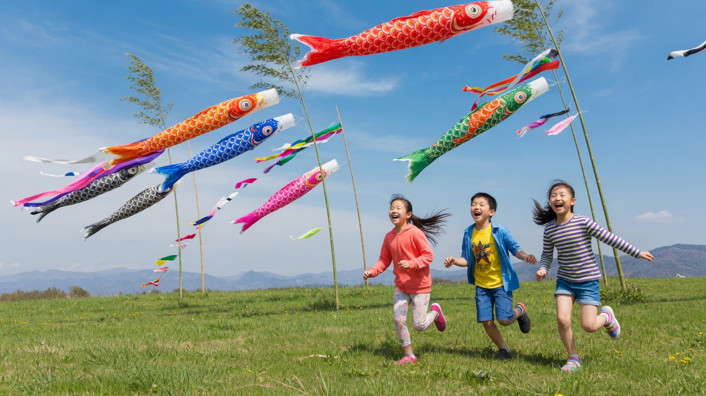

FOR FAMILIES
A living banner
for every child.
Koinobori replaces scattered photos and forgotten promises with one beautiful, always-growing record of who your children are becoming.
- Private family timeline with beautiful printed keepsakes
- Shared goals that feel like a game, never a chore
- Simple rituals for every season and every small triumph

